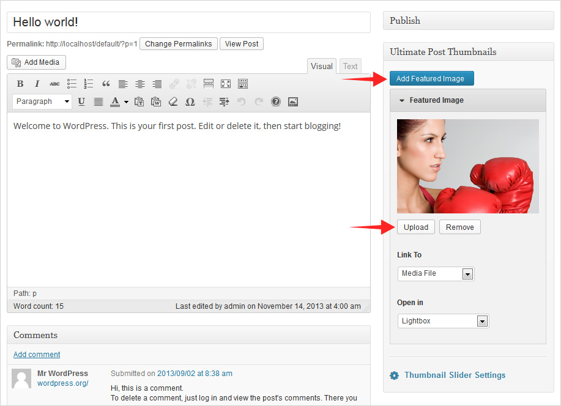
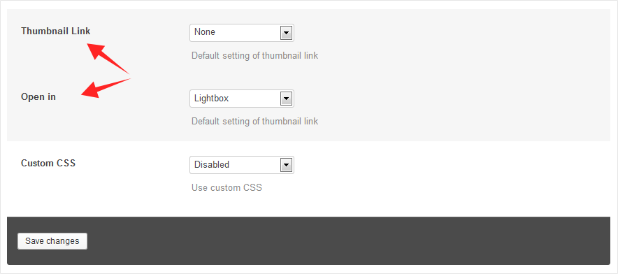
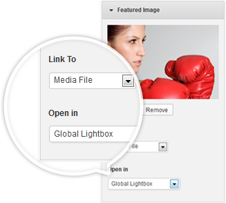
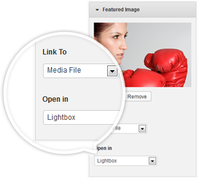
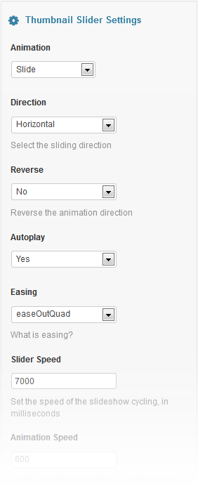
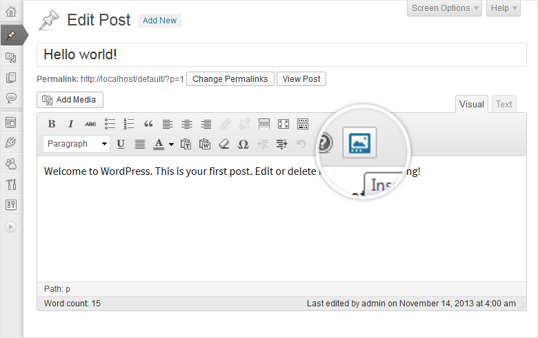
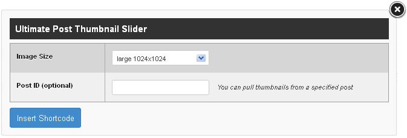
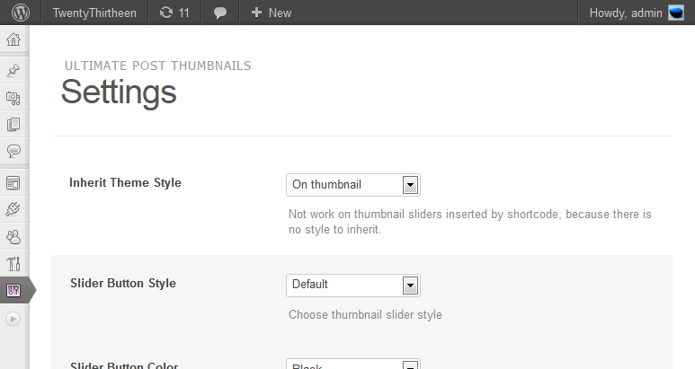

Thank you for purchasing my plugin. Please follow this document to set up your website using the template/plugin that you have just purchased. I have separated this document into categories for your ease of use. You can use the side navigation to jump to any desired category.
Installation Guide
Required: PHP 5.2+, WordPress 3.9+
Important - Do not upload the plugin package you downloaded from Themeforest, but the zip file called ""ultimate-post-thumbnails.zip" inside, this is the actual plugin file you are to use in the following, not the whole package!
a. Log in to the WordPress Administration Panel.
b. Navigate to Plugins > Add New, then click the "Upload" link on the top left.
c. Click "Browse" and select the plugin file "ultimate-post-thumbnails.zip" from your computer, then click "Install Now".
d. Once the plugin is installed, click "Activate".
Add New Featured Image

When Ultimate Post Thumbnails is activated, your featured image control panel should look like the above, you can add extra featured images now.
Click the "+ Add Featured Image" button Each click will create a new featured image, you can have 10 featured images at max per post.
Click the "Upload" button Upload featured image is the same as you used to.
Change thumbnails’ order Drag and drop the "Featured Image" panels to change the order, the change will reflect in the thumbnail slider.
Click "Update" / "Publish" button to save your post
Note: If you cannot find "Ultimate Post Thumbnails" panel, click on the "Screen Options" at top right corner, then tick up "Featured Image", it will show up. Or if there isn’t "Featured Image", that means your theme doesn’t support featured image here, please query your theme author.
Below each featured image upload/remove buttons, there are a few options for you to control you featured image link.
Featured Image
Click to expand the panel and configure settings for the thumbnail.
Featured Image – Default The native featured image of WordPress. WordPress relies on this image to determine if a post has post thumbnail, leave it empty may result in your thumbnails not show up.
Link to
Control the image link.
Open in Control where the image link should be opened, current window/tab, a new window/tab or lightboxes
Lightbox & Global Lightbox – Support only "Link to: Media File", and "Link to: Custom URL to video or image file"
Lightbox - When this option is selected, the image will be opened in a lightbox contains all featured images of the post, except those set to "Global Lightbox".
Global Lightbox - When this option is selected, the image will be opened in a lightbox contains all featured images on a page, except those set to "Lightbox".
Add Thumbnail Link for all posts
To easily setup links on all post thumbnails, go to Settings > Ultimate Post Thumbnails, find option "Thumbnail Link" and "Open in" and change them per your demands.

Note: These settings will be overridden by thumbnail link settings in post/page.
Setup the lightbox
To setup the lightbox, add a featured image into "Global Lightbox":
Click on "Featured Image"
Click on the "Link to" selectbox and choose "Media File"
Click on the "Open in" selectbox and choose "Global Lightbox"
Click "Update" / "Publish" button to save your post
Note: only "Media File" and "Custom URL" are supported here, a Custom URL must points to either an image or a video
Setup a dedicated lightbox
To setup a dedicated lightbox, add a featured image into "Lightbox":
Click on "Featured Image"
Click on the "Link to" selectbox and choose "Media File"
Click on the "Open in" selectbox and choose "Lightbox"
Click "Update" / "Publish" button to save your post
Note: only "Media File" and "Custom URL" are supported here, a Custom URL must points to either an image or a video
Configure Thumbnail Slider
When you have uploaded more than one featured images, your post thumbnail will be turned to a thumbnail slider automatically, you have no need to setup anything else. While advanced thumbnail slider options are available to create different kind of sliders.
Animation "Fade" or "Slide", the way of your thumbnail animates.
Autoplay Whether or not to start animation automatically
Easing Easing functions specify the speed at which an animation progresses at different points within the animation. Read More
Slider Speed Set the speed (in milliseconds) of the slideshow cycling.
Animation Speed Set the speed (in milliseconds) of animations.
Start Time The animation begin time of the thumbnail slider, counting starts once page loaded (in milliseconds).
Show Thumbnails Show thumbnails of post featured images. Disable "Auto Height" to gain the best effect.
Pause on hover Whether to stop animation when mouse is hovering on thumbnail.
Auto Height When this option is enabled, the thumbnail slider with automatically adjust height to fit the active image, smoothly.
Add Thumbnail Slider to Page
1. Open the page or post where you want to insert thumbnail slider, then in its editor toolbar click the "Insert Thumbnail Slider" button.

2. Then a window as below will popup. Make settings on it and click "Insert Shortcode" when done. Thus the thumbnail slider shortcode will be added into the editor.

Slider Size Listed are all image sizes in your WordPress site, WordPress comes with three image sizes ‘small’, ‘medium’ and ‘large’, you will find these size settings in "Settings > Media". All other image sizes are added by your theme or other plugins.
Post ID A post ID is not required, the slider will display the thumbnails from the current page or post that you are editing. If provided, the thumbnails of that post will be displayed.
Plugin Settings
You can navigate to Settings > Ultimate Post Thumbnails, and make general settings for all the thumbnail sliders. When all are done, click the button "Save changes".

Inherit Theme Style By default, theme styles are inherited to post thumbnails, if you experience style issue, change this option may help.
Slider Button Style Choose your slider navigation button style.
Slider Button Color "white" or "black", for custom colors, see option Custom CSS below.
Lightbox If you want to use your own lightbox, you can disable the native lightbox here.
Lightbox Themes Choose your lightbox theme.
Thumbnail Link The default setting to control if thumbnails have a link and where the link goes, will be overridden by thumbnail link settings in post/page.
Open in The default setting that controls where thumbnail links should be opened to, will be overridden by thumbnail link settings in post/page.
Custom CSS If you need to customize the slider styles, check this option to see a couple of examples, add your own styles, etc.
{kind=link}